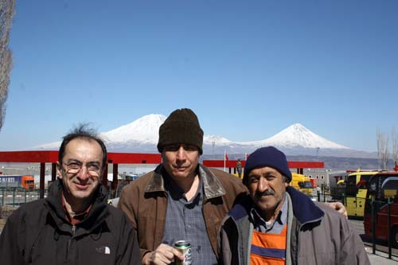
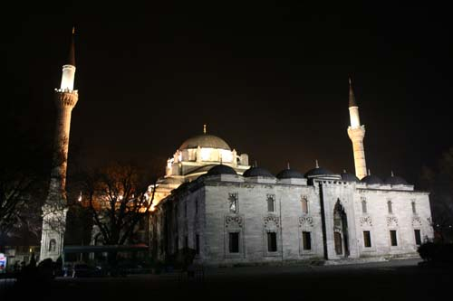
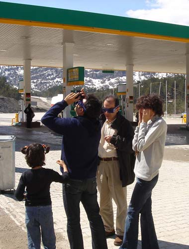
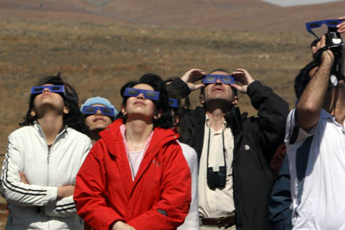
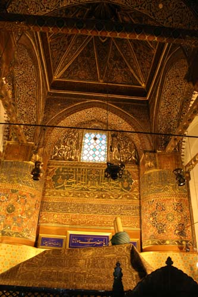

| Leaving Iran
View of the beautiful Mt. Ararat (Agri Dagh) helps you forget about the long boder formalities at Bazargan border post. Ali Parsa, Mostafa Azizi and one very friendly janitor from Turkey have posed for this photo. |  |
 | Istanbul
Our first night in Istanbul, one of my favorite cities. Suleymanie Camii, one of the city's magnificent mosques, built by Mimar Sinan. |
Eclipse
There was a total solar eclipse happening in parts of Turkey in March 2006. We watched it near Konya. Here Hasti, her father Peyman, me and Zeinab are seen trying our eclipse goggles. (Photo: Shahram Moini) |  | |  | Watching the eclipse on the hills near Konya. |
|
Konya
Inside Rumi tomb in Konya. |  |
|